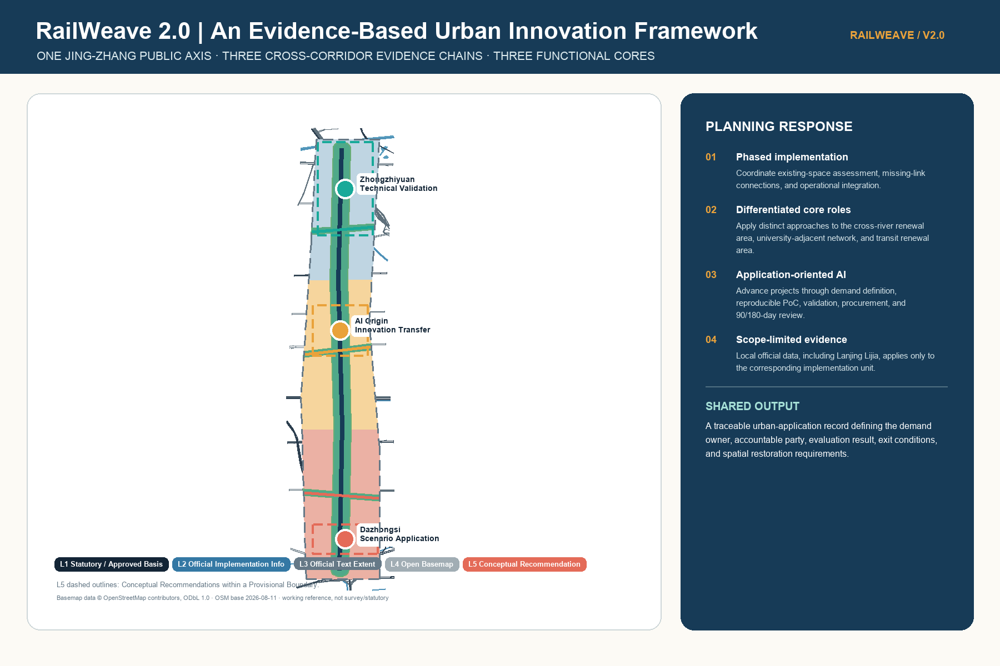
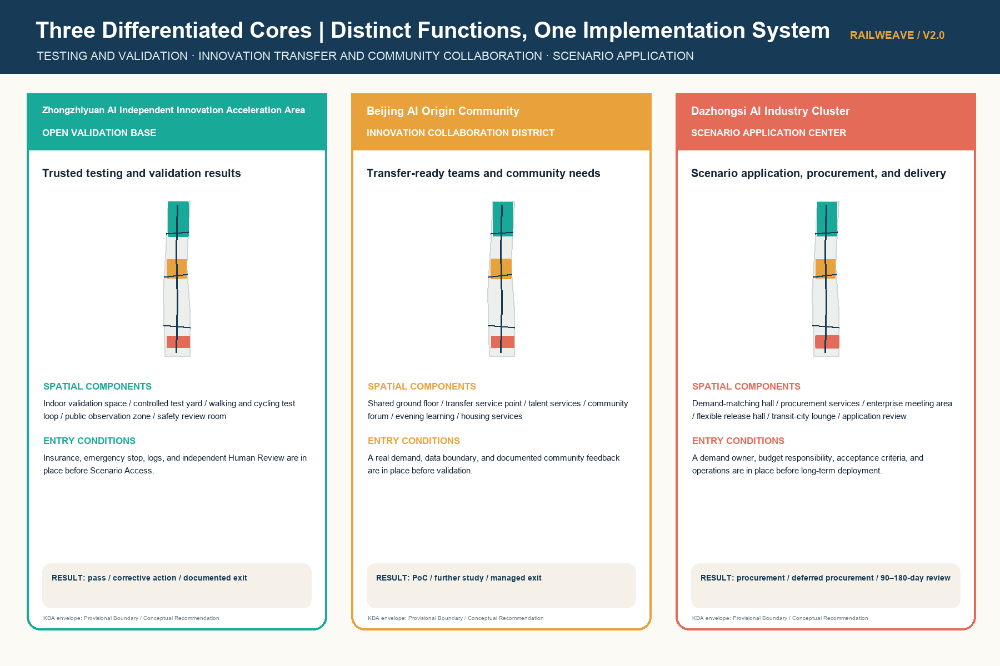
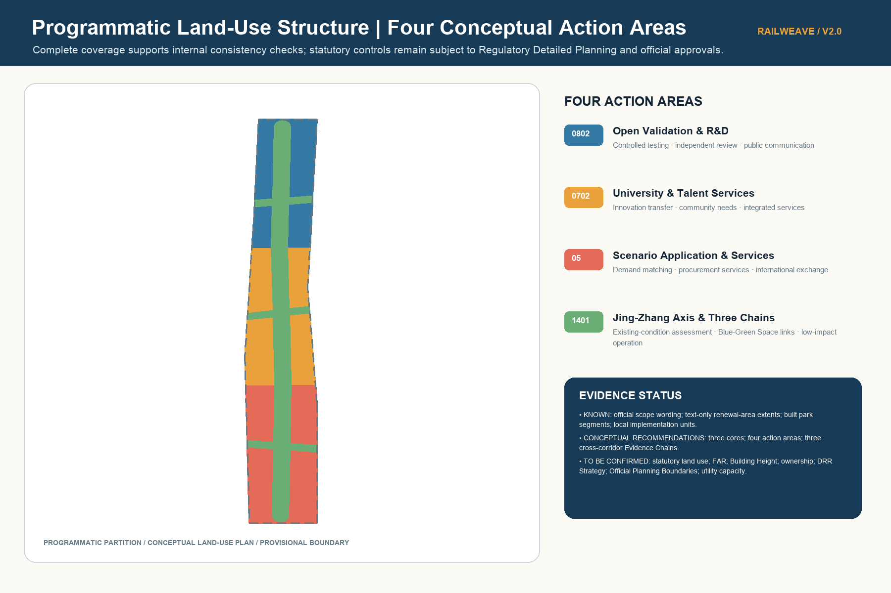
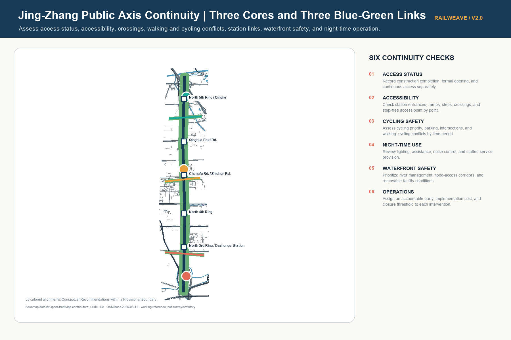
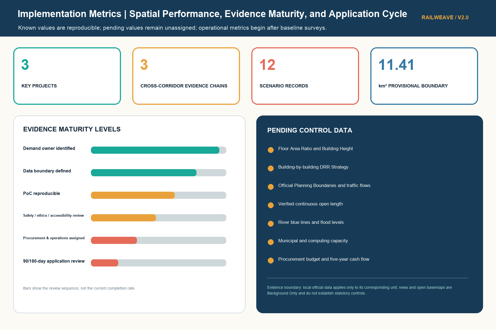

Undertake professional testing of model reproducibility, safety, energy use, accessibility, emergency stopping, and incident response, and produce reviewable validation findings.
Overview and Three-Level Scope Framework
The Coordinated Research Area is approximately 43.6 km² and the Overall Design Area approximately 11.4 km². The three Key-Area Detailed Design Areas are Zhongzhiyuan, AI Origin, and Dazhongsi. Provisional working boundaries are used for current recomputation; once official vector boundaries are released, the boundaries, existing-condition layers, proposal layers, metrics, and drawings must be updated as one coordinated dataset.

L4 working basemap © OpenStreetMap contributors, ODbL 1.0; snapshot dated 2026-08-11; neither survey-grade nor statutory.
Key Areas and Urban-Renewal Projects
Organize innovation demand and proofs of concept while strengthening commercialization support, talent services, and community consultation.
Provide scenario-demand publication, procurement-compliance consultation, supply-demand matching, operations and maintenance support, and 90/180-day application evaluation.

Land-Use Structure and Building-Renewal Principles
The four color fields are L5 conceptual functional zones used only for internal consistency review; they do not constitute existing or statutory land use. The building layer remains empty because verified building footprints are unavailable. Open-data building outlines are retained only as survey references; ownership, use, structural condition, fire safety, and renewal classification require dedicated investigation. Initial action is organized through the “one room, one validation space, one demand pool, and four manuals” work package.

Walking and Cycling, Transport, and Blue-Green Public Space
The proposal establishes the Jing-Zhang Innovation Coordination Axis together with the Qinghe Linkage Corridor, the Xiaoyue River–University Coordination Corridor, and the Zhuanhe Transit-Station Integration Corridor. Colored alignments indicate continuity assessment and conceptual spatial links. Public opening, step-free access, crossings, railway protection, water-management boundaries, and flood-control conditions require segment-by-segment verification.

Task Coverage: AI Scenarios and Implementation Conditions
01 Demand Identification
Confirm the demand owner, service users, and public value.
02 Proof of Concept
Define data boundaries, technical versions, and reproducibility requirements.
03 Integrated Review
Undertake independent safety, ethics, and accessibility review.
04 Procurement and Delivery
Implement compliant procedures, budgets, contracts, and acceptance.
05 Application Evaluation
Conduct 90/180-day evaluation followed by improvement or exit where necessary.
Core Metrics
11.41
km² provisional study area
km² provisional study area
27.8%
conceptual public-axis and corridor envelope ratio
conceptual public-axis and corridor envelope ratio
0.54%
action-area ratio for three priority projects
action-area ratio for three priority projects
3
core functional nodes
core functional nodes
12
AI-enabled scenarios
AI-enabled scenarios
7
key metrics pending verification
key metrics pending verification

Five Evidence Levels, Sources, Assumptions, and Self-Check Status
L1
Statutory or approved basis
Statutory or approved basis
L2
Official implementation information
Official implementation information
L3
Official textual extents
Official textual extents
L4
Open-data working basemap
Open-data working basemap
L5
Planning recommendations and provisional geometry
Planning recommendations and provisional geometry
Sources: government notices, regulations, public disclosures, institutional websites, rights-cleared repository materials, and the OSM working basemap. Applicable limits are recorded in sources.json.
Assumptions and gaps: official boundaries, parcels, buildings, roads, heritage controls, water-management conditions, municipal capacity, procurement arrangements, and operating information remain to be supplemented, as recorded in assumptions.json.
Task coverage: the deliverable addresses Sections 1.3, 1.4, and 1.5 of the announcement and the six Agent tasks; see compliance_matrix.json.
Self-check: geometry, metrics, pages, and evidence references have undergone internal review. Passing an internal check does not constitute statutory planning, administrative approval, or engineering-design depth.